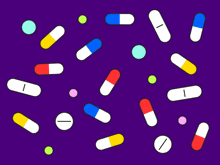

Introduction to Pharmacology
Pharmacology is the branch of medicine and biology concerned with the study of drug action on biological systems. It
involves understanding how drugs interact with living organisms to produce therapeutic effects, as well as their
potential for causing harm. Pharmacology is divided into two main sub-disciplines:
Pharmacokinetics
Pharmacokinetics refers to the movement of drugs within the body, including how they are absorbed, distributed,
metabolized, and excreted. The key processes involved are:
- Absorption: How a drug enters the bloodstream after administration.
- Distribution: How the drug spreads through the body to its target tissues.
- Metabolism: How the body breaks down the drug, primarily in the liver.
- Excretion: How the body eliminates the drug, often through the kidneys (urine), liver (bile), or lungs.
Pharmacodynamics
Pharmacodynamics deals with the effects of drugs on the body, especially the mechanisms of action and the
relationship
between drug concentration and effect. It includes:
- Receptor binding: Drugs interact with specific receptors to trigger a biological response.
- Dose-response relationships: The relationship between the drug's concentration and its therapeutic effect.
- Therapeutic and adverse effects: The beneficial outcomes a drug can provide, as well as potential side effects
or toxicity.
Key Terms in Pharmacology
- Agonists: Drugs that bind to receptors and activate them to produce a biological response.
- Antagonists: Drugs that bind to receptors but do not activate them; they block or dampen the action of agonists.
- Half-life: The time it takes for the concentration of a drug in the blood to decrease by half.
- Therapeutic index: A measure of a drug’s safety, calculated as the ratio of the toxic dose to the effective
dose.
Drug Classes
Drugs are often classified based on their therapeutic effects, chemical structure, or mechanism of action. Some
common
drug classes include:
- Analgesics: Pain relievers, e.g., aspirin, morphine.
- Antibiotics: Drugs that treat bacterial infections, e.g., penicillin
- Antipyretics: Fever reducers, e.g., acetaminophen.
- Antihypertensives: Drugs used to lower blood pressure, e.g., beta-blockers.
Clinical Pharmacology
This area focuses on the application of pharmacological principles in clinical practice. It includes:
- Drug interactions: How drugs interact with each other, affecting their efficacy or safety.
- Personalized medicine: Tailoring drug therapy based on individual genetic profiles.
- Pharmacovigilance: Monitoring the safety of drugs after they have been approved for use, to detect and assess
adverse effects.
Importance of Pharmacology
Pharmacology is vital for the development of new drugs, understanding how existing drugs work, and ensuring the safe
and effective use of medications. It underpins much of medical practice, helping healthcare professionals choose the
right medications, understand their potential side effects, and manage drug interactions.
Overall, pharmacology is essential in the field of healthcare, contributing to improved patient outcomes through
better understanding and application of therapeutic drugs.
